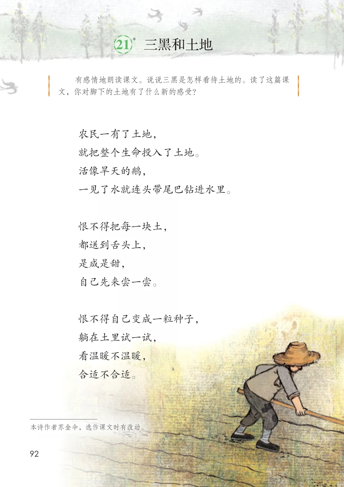
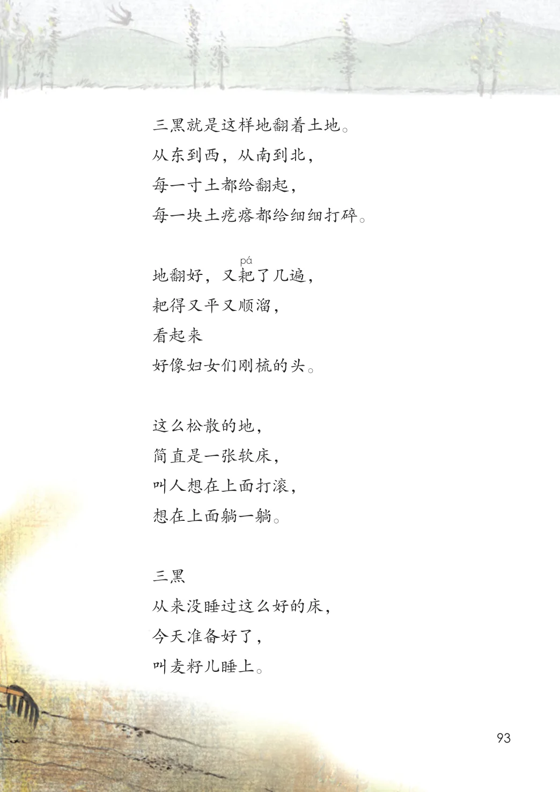
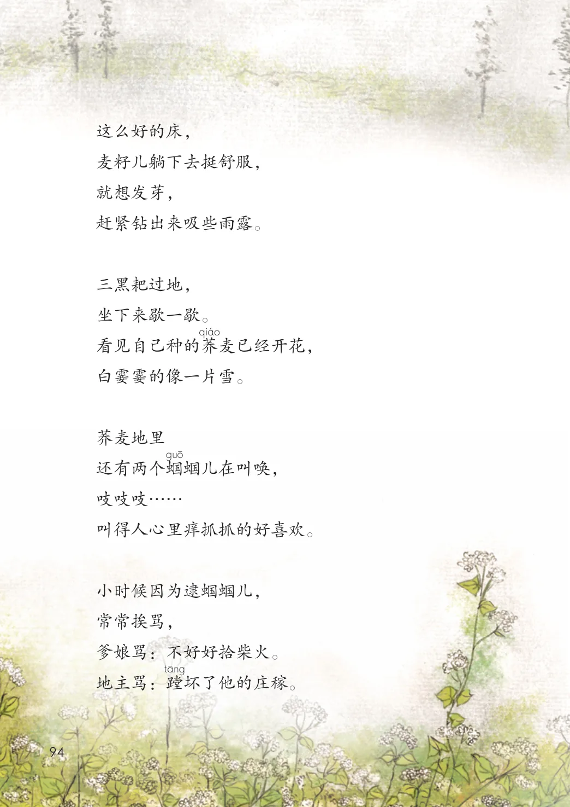
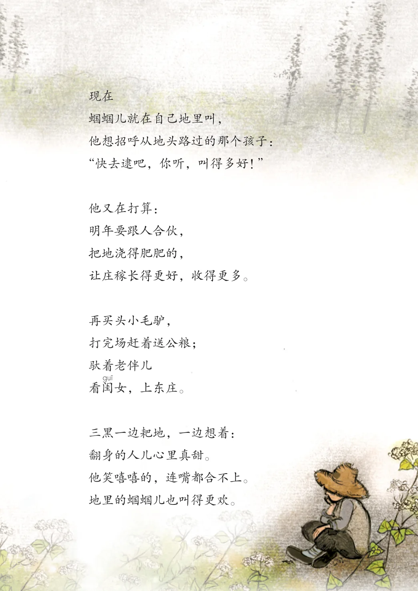
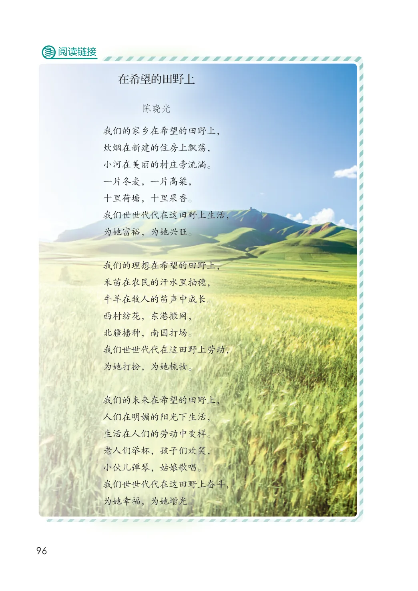

第六单元 · 第 21 课
三黑和土地
课后练习
- 有感情地朗读课文。说说三黑是怎样看待土地的。读了这篇课文，你对脚下的土地有了什么新的感受？农民一有了土地，就把整个生命投入了土地。活像旱天的鹅，一见了水就连头带尾巴钻进水里。恨不得把每一块土，都送到舌头上，是咸是甜，自己先来尝一尝。恨不得自己变成一粒种子，躺在土里试一试，看温暖不温暖，合适不合适。本诗作者苏金伞，选作课文时有改动。
文字内容 PDF 第 98 页
三黑就是这样地翻着土地。
从东到西，从南到北，
每一寸土都给翻起，
每一块土疙瘩都给细细打碎。
地翻好，又耙了几遍，
耙得又平又顺溜，
看起来
好像妇女们刚梳的头。
这么松散的地，
简直是一张软床，
叫人想在上面打滚，
想在上面躺一躺。
三黑
从来没睡过这么好的床，
今天准备好了，
叫麦籽儿睡上。
文字内容 PDF 第 99 页
这么好的床，
麦籽儿躺下去挺舒服，
就想发芽，
赶紧钻出来吸些雨露。
三黑耙过地，
坐下来歇一歇。
看见自己种的荞麦已经开花，
白霎霎的像一片雪。
还有两个蝈蝈儿在叫唤，
吱吱吱……
叫得人心里痒抓抓的好喜欢。
小时候因为逮蝈蝈儿，
常常挨骂，
爹娘骂：不好好拾柴火。
地主骂：蹚坏了他的庄稼。
生字与词语
文字内容 PDF 第 100 页
现在
蝈蝈儿就在自己地里叫，
他想招呼从地头路过的那个孩子：
“快去逮吧，你听，叫得多好！”
他又在打算：
明年要跟人合伙，
把地浇得肥肥的，
让庄稼长得更好，收得更多。
再买头小毛驴，
打完场赶着送公粮；
看闺女，上东庄。
三黑一边耙地，一边想着：
翻身的人儿心里真甜。
他笑嘻嘻的，连嘴都合不上。
地里的蝈蝈儿也叫得更欢。
生字与词语
阅读链接
在希望的田野上
陈晓光
我们的家乡在希望的田野上，
炊烟在新建的住房上飘荡，
小河在美丽的村庄旁流淌。
一片冬麦，一片高粱，
十里荷塘，十里果香。
我们世世代代在这田野上生活，
为她富裕，为她兴旺。
我们的理想在希望的田野上，
禾苗在农民的汗水里抽穗，
牛羊在牧人的笛声中成长。
西村纺花，东港撒网，
北疆播种，南国打场。
我们世世代代在这田野上劳动，
为她打扮，为她梳妆。
我们的未来在希望的田野上，
人们在明媚的阳光下生活，
生活在人们的劳动中变样。
老人们举杯，孩子们欢笑，
小伙儿弹琴，姑娘歌唱。
我们世世代代在这田野上奋斗，
为她幸福，为她增光。
原版对照
原书页面与全部插图
点击图片可查看大图。




